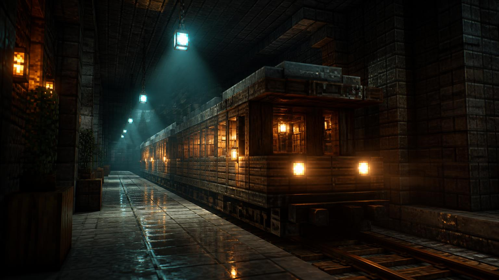
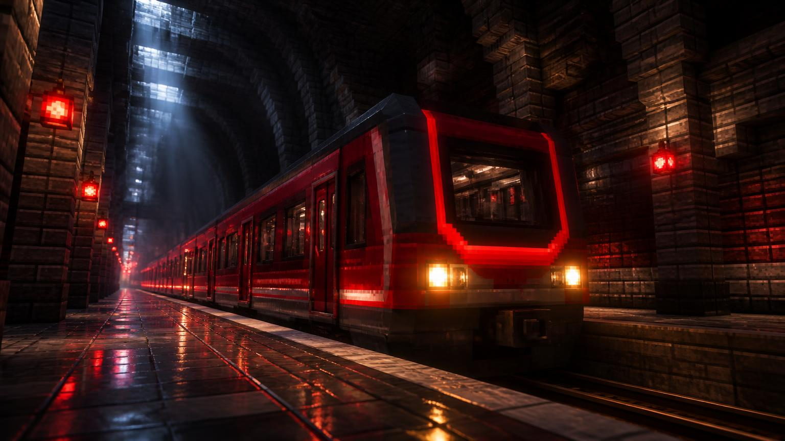
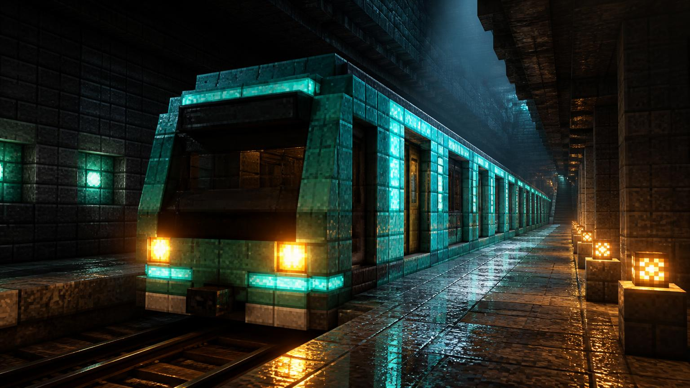
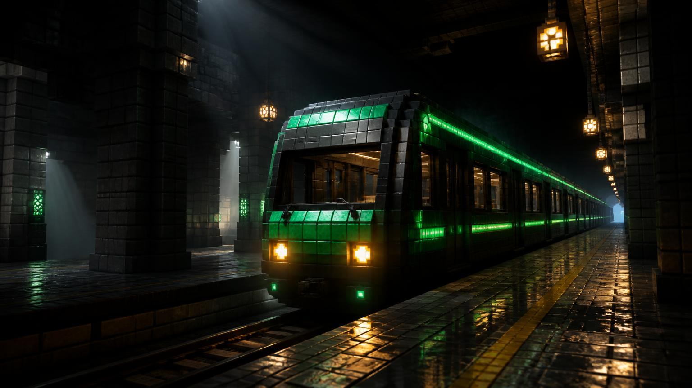
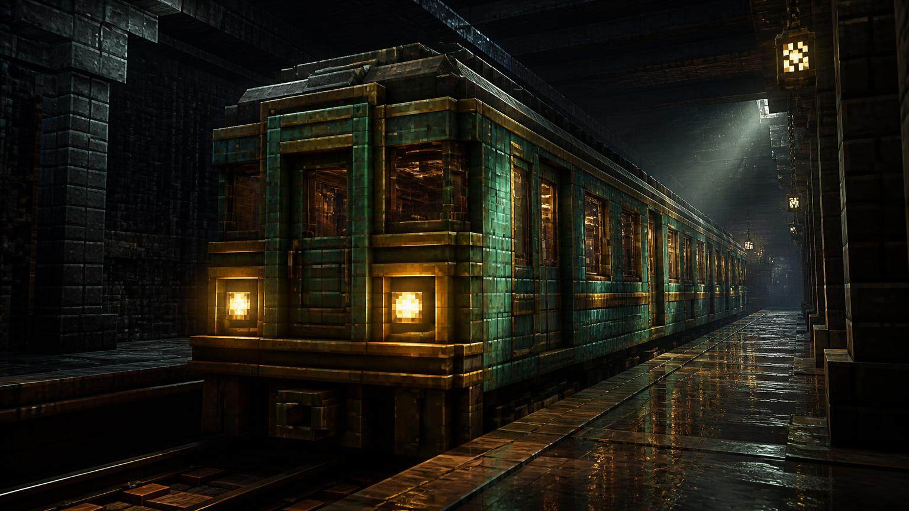
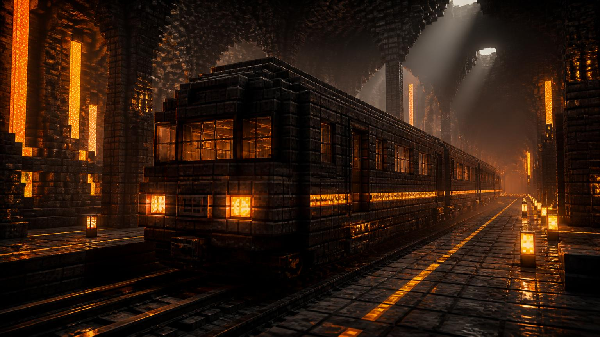
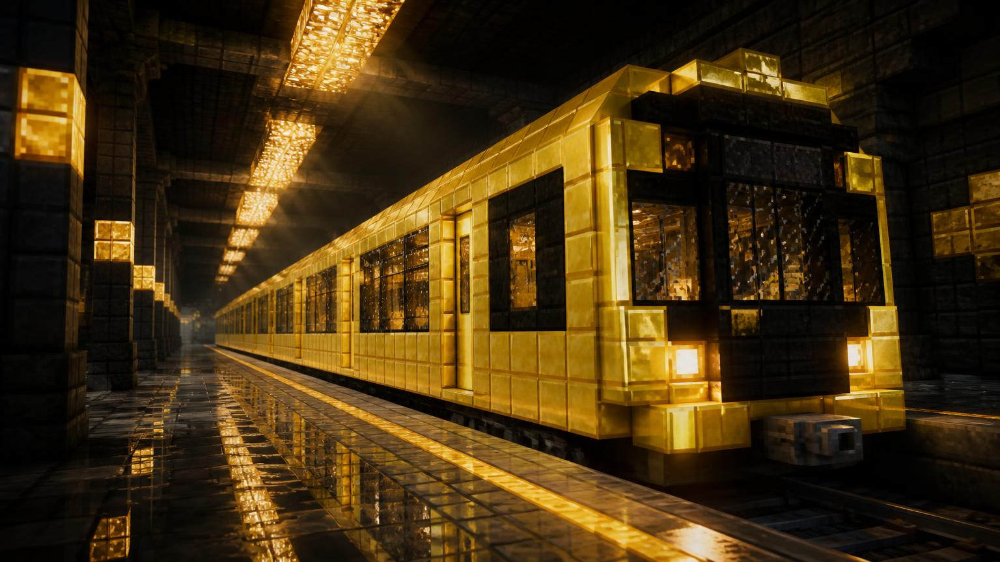
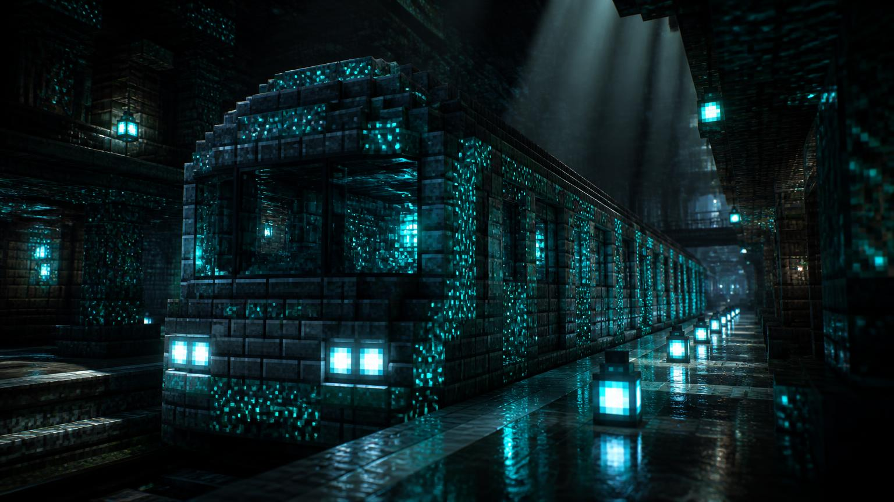

Тип «Вагонетка-01»
Перший серійний склад мережі, зібраний із дубових блоків та заліза. Досі працює на Червоній лінії у години пік.
Вісім серій потягів — від першої дерев'яної вагонетки 2019 року до швидкісного «Ехо-Шарда».

Перший серійний склад мережі, зібраний із дубових блоків та заліза. Досі працює на Червоній лінії у години пік.

Швидкісний склад із редстоуновою автоматикою розгону та підсвіченими бортами.

Склад для підводних перегонів Синьої лінії з герметичними дверима та блакитним світлом салону.

Флагман Смарагдової лінії: панорамні вікна, м'яке зелене освітлення та тиха підвіска.

Історичний склад для ретро-рейсів вихідного дня з окисленою мідною обшивкою.

Термостійкий склад для перегонів біля Незер-порталу, обшитий блеквертом та обсидіаном.

Найдовший склад мережі із золотою окантовкою та маяковою навігацією.

Найшвидший потяг метро: скалк-сенсори гальмування та фіолетова кристалічна підсвітка.